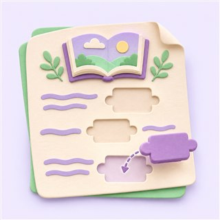
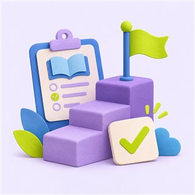
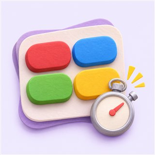

읽기
MY Reading Passport
독서 여권
세계문학 523권을 읽고 퀴즈 메달을 모아요. 세계 문학 지도와 명예의 전당도 만나요.
앱 열기사용 안내
FIND YOUR NEXT STEP
읽기부터 어휘 공부, 표현과 게임까지. 하고 싶은 활동을 골라 보세요.
책과 글을 읽으며 영어의 맥락을 만나요.
독서 여권
세계문학 523권을 읽고 퀴즈 메달을 모아요. 세계 문학 지도와 명예의 전당도 만나요.
지식 여권
Pre-A1부터 B2까지, 다양한 주제의 지식 글 300편을 읽어요.
교과서 메트로
YBM·NE능률·천재 중1·2, 공통영어 1·2의 본문을 12개 노선·91개 역으로 읽어요.

읽기빈칸·문장 순서 활동
6자리 코드로 참여해 빈칸 채우기·문장 순서 테스트를 풀어요.
뜻을 익히고, 기억하고, 다시 복습해요.
차곡차곡 어휘 공부
교과서 어휘를 익히고 단원 테스트로 확인해요. 오프라인 학습도 지원해요.
문장이 만들어지는 규칙을 차근차근 익혀요.
문법 학습실
18단원을 학습하고 반복 복습하며 Grammar Queen에 도전해요.
듣고 말하고 쓰며 내 생각을 표현해요.
말하기 연습
교과서 대화문을 듣고 따라 말해요. 목소리는 저장하지 않아요.
영작문과 피드백
한국어 제시문을 영어로 쓰면 Gemini가 채점하고 피드백을 제공해요.
익힌 어휘와 문장을 게임으로 다시 연습해요.
교과서 단어 게임
교과서 단어를 7종 게임으로 익히고 오답 노트로 복습해요.
단어·문장 챌린지
단어와 문장을 8종 게임으로 연습하고 랭킹에 도전해요.
영어 놀이터
교과서 어휘·예문 674문항을 12종 게임으로 연습해요.
교과서 문장 체육관
문장 게임 9종을 로그인 없이 즐겨요. 학습 기록은 이용한 기기에만 저장돼요.
지금의 출발점과 쌓여 가는 배움을 확인해요.

수준 확인·학습 기록영어 레벨 테스트
약 13분의 적응형 테스트로 CEFR·어휘 크기·Lexile·AR 지수를 확인하고 추천 책 4권을 만나요.
내 기록 · 나의 영어 여정
모든 앱에서 쌓은 나의 학습 기록을 한 화면에서 확인해요.
역사와 문학을 만나며 배움의 세계를 넓혀요.
세계사와 한국사를 탐험하는 교과 학습 공간이에요.
역사 박물관
역사①·②의 40개 전시실이 모두 열려 있어요. 퀴즈 400문항으로 탐구해요.
작품 속 이야기와 인물을 퀴즈로 다시 만나요.
국어·문학 퀴즈쇼
128개 작품을 퀴즈로 만나요. 로그인 없이 이용하며 모바일 전용 화면도 있어요.
새로운 상식을 발견하고 수업 퀴즈에 함께 참여해요.
분야를 넘나드는 질문으로 호기심을 넓혀요.
랜덤 상식 퀴즈
8개 분야의 랜덤 퀴즈를 풀고 주간 순위와 반 대항전에 참여해요.
상식 여왕 도전기
룰렛으로 상식 퀴즈를 풀고 왕관과 인증서에 도전해요.
선생님이 연 퀴즈와 과제에 참여해요.

수업 퀴즈 참여학생 퀴즈 입장
학생 화면에서 PIN으로 실시간 스피드 퀴즈에 참여하거나 우리 반 과제를 풀어요.
교사 전용 관리 도구와 수업 자료를 모았어요. 관리 기능은 각 앱의 교사 인증 후 이용할 수 있어요.
수업 자료를 열고, 과제를 만들고, 피드백을 확인해요.
전자칠판 수업 자료
1·2학년 16단원의 전자칠판용 수업 자료예요. 로그인 없이 열 수 있어요.
테스트·과제 만들기
빈칸 채우기·문장 순서 테스트를 만들고 6자리 코드로 배포해요.
영작문 과제·교사 대시보드
한국어 제시문으로 영작문 과제를 내고 Gemini 채점과 학생의 제출 현황을 확인해요.
실시간 퀴즈와 함께하는 활동을 준비해요.
퀴즈 진행·과제 관리
실시간 스피드 퀴즈를 진행하고 과제와 학생 결과를 관리해요.
수업·행사 퀴즈쇼
128개 작품을 퀴즈로 만나요. 로그인 없이 이용하며 모바일 전용 화면도 있어요.
학생의 배움과 학급 활동을 한곳에서 살펴봐요.
교사용 통합 현황
앱별 학생 기록을 한 화면에 모아 보고 으쓱을 지급해요.
학급 경영
으쓱·머쓱 점수와 다양한 도구로 학급 활동을 관리해요.
검색어를 바꾸거나 선택한 대상의 전체 앱을 살펴보세요.
STAY CONNECTED
수업 이야기와 다양한 소식을 채널에서 만나세요.